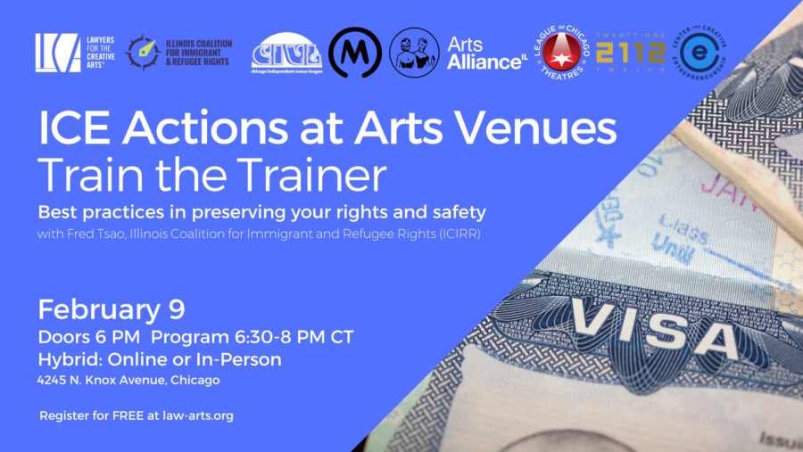

ICE Actions at Arts Venues: Train the Trainer Event
In this program, we will provide specific best practices advice in responding to visits from ICE at your venue, including:
Rights you, your staff, and your patrons have when confronted by ICE agents; how to effectively assert those rights, and most importantly how to avoid threats to the safety of yourself and others in these situations;
Court and administrative warrants;
Suggestions for documenting and recording that will help to preserve your rights.
This program equips members of the Chicago area arts and culture community with practical knowledge they can share with their staff, collaborators, and audiences to help foster safer, more informed spaces. The training is designed not only for individual preparedness, but also to support participants in sharing this information with their broader communities, venues, and networks.
There will be an opportunity for Q&A.
This program is hybrid. Register for the Zoom Webinar or in-person at 2112/Center for Creative Entrepreneurship (4245 N Knox Ave, Chicago, IL).
About the Speaker: